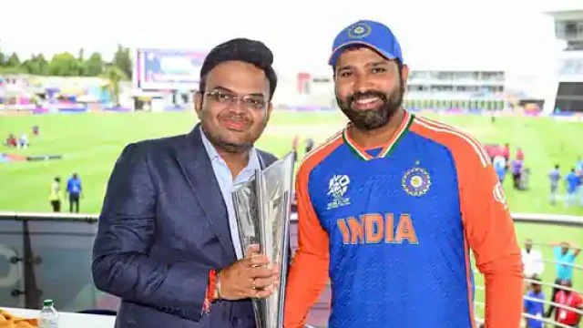
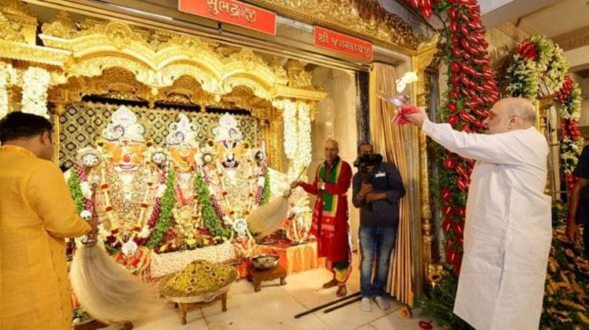

________________________________________________THE DAILY NEWS____________________________________________________
FRIDAY , 9 TH/ JUNE/2024
********************************************************ALL ABOUT THE BIG WORLD WE LIVE**************************************************************
#1.Rohit Sharma will lead India to Champions Trophy, WTC final wins: BCCI secretary Jay Shah...
UPDATED:-JULY 8,2024
Reporter:-Paranjoy Guha Thakurta

Under Rohit's captaincy, India ended their 11-year ICC title drought with a seven-run win over South Africa in the T20 World Cup final last week in Barbados.Under Rohit's captaincy, India ended their 11-year ICC title drought with a seven-run win over South Africa in the T20 World Cup final last week in Barbados.“This was our third final within a year. On June 11 last year, we lost the WTC final. On November 19 after winning 10 matches, we won hearts but failed to win the ODI World Cup. But as I had said earlier this year in Rajkot, India proceeded to win hearts and the World Cup under Rohit’s leadership,”
#2.Latest News Today Live: 147th Rath Yatra procession begins in Puri, President Murmu to be present today...
UPDATED:-JULY 8,2024
Reporter:-Sudhir Choudhari

The 147th Lord Jagannath’s annual Rath Yatra festival ended for the day today, with the chariots set to be pulled tomorrow (Monday). The Yatra is going to be a two-day affair after 53 years. President Droupadi Murmu is also scheduled to witness the Rath Yatra today, along with lakhs of devotees in the pilgrim town. The festival usually organised in a single was last held for two days in 1971.
The Yatra rolled out from the 400-year-old Lord Jagannath temple in Gujarat’s Jamalpur area this morning. Union Home Minister Amit Shah performed the ‘mangla aarti’ and Gujarat Chief Minister Bhupendra Patel performed ‘pahind vidhi’, the ritual of cleaning the way using a golden broom.
What security arrangements are in place in Puri? A crowd of about 10-15 lakh is expected at the festival venue. The Odisha government with the Centre has made arrangements for 180 platoons (one platoon comprises 30 personnel) of security personnel to be deployed to look after the law and order and manage the crowds during the festival. Artificial Intelligence-based CCTV cameras have also been installed. A buffer zone has been planned for the President, while there’s going to be VIP zone for the Odisha governor, chief minister, Union ministers and other dignitaries.
#3.Tech news of the week: TRAI’s clarification on mobile tariff hike, Apple’s India-centric features on iOS 18, and more...
UPDATED:-JULY 8,2024
Reporter:-Tech Desk
Tech News of the week (First week of July 2024): TRAI has clarified the recent price hike by major telecom service providers in India, and Apple has highlighted the India-centric features of the upcoming iOS 18.
Tech News of the week (First week of July 2024): TRAI has clarified the recent price hike by major telecom service providers in India, and Apple has highlighted the India-centric features of the upcoming iOS 18.
#4.Over 7,000 dengue cases reported in Karnataka this year, Bengaluru worst-hit...
UPDATED:-JULY 8,2024
Reporter:-Vivek Kumar

As of July 6, as many as 7,006 people have been diagnosed with the viral infection in Karnataka, with Bengaluru alone recording 1,908 cases. Six of those infected have succumbed to the disease.
In Short
* Six people diagnosed with dengue in Karnataka died this year
* Bengaluru alone reported 1,908 cases of viral infection
* People urged to take necessary precautions, seek medical help
With rain lashing most parts of India, some southern states are witnessing an uptick in vector-borne diseases. As a result, the dengue outbreak in Karnataka has raised concerns as the state has breached the 7,000-mark in terms of the number of cases recorded this year.